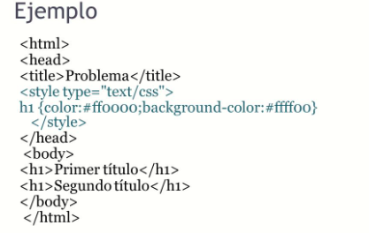

Hojas de Estilo en Cascada CSS
La manera en que funciona las CSS radica en definir, a través de una sintaxis especial, la manera de presentación que se le aplica a los elementos de la página. Se puede aplicar CSS a múltiples niveles, desde un sitio web completo hasta una etiqueta pequeña. Según Josue,(). Lov Technology.
Los principales bloques de acción son los siguientes.
Una web completa, de manera que se puede establecer en un único lugar el estilo de toda la web una sola vez. Según Josue,(). Lov Technology.
Un fichero HTML o página en particular, se puede precisar la manera de cada uno de los bloques de contenido de una página, en una declaración que impactará a un documento de determinada web. Según Josue,(). Lov Technology.
Un fragmento del documento, se puede aplicar estilos de manera visible en una parte de la página, por ejemplo, en la cabecera. Según Josue,(). Lov Technology.
Una etiqueta en particular, el cual se puede definir múltiples estilos para una etiqueta. Esto es excelente ya que le da potencia a la programación. Se puede definir, por ejemplo, múltiples tipos de párrafos: en rojo, en verde, con o sin márgenes, entre otros más. Según Josue,(). Lov Technology.
Anteriormente en HTML se quedaba corto para maquetar y se tenía que utilizar trucos para conseguir los propósitos, actualmente existen múltiples herramientas que permiten definir esta forma:
• Se puede definir la distancia entre líneas del documento.
• Aplicar sangrado a las primeras líneas del párrafo.
• Permite colocar elementos en la página con mayor precisión.
• Entre otros más, como decir la visibilidad de los elementos, márgenes, subrayados, tachados. Según Josue,(). Lov Technology.
